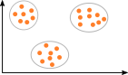
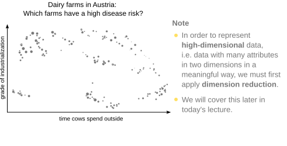
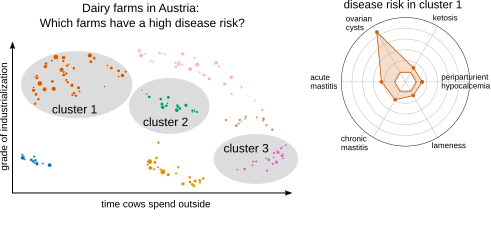
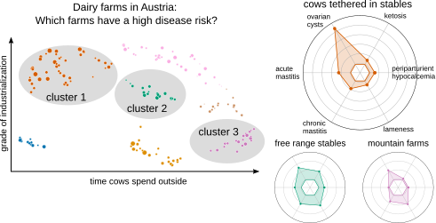

Micro-Degree Artificial Intelligence and Society
– Technical Aspects of AI –
Lecture 3.1: Unsupervised Learning


Motivation
Supervised Learning
- Known relationship between attributes and target values (classes or numbers).
- Prediction of target values for new observations.
How can we model data when no target values are known?
→ Unsupervised Learning (cluster analysis)
| Parents' Annual Income Attribute |
School Grade Target Value |
|---|---|
| 80,000 € | 1 |
| 180,000 € | 3 |
| 50,000 € | 2 |
| 160,000 € | 4 |
| 60,000 € | 1 |
| 170,000 € | 4 |
| 60,000 € | 1 |
Example: Predicting School Success.
What is Cluster Analysis?
Task: Group similar points.



A cluster is a set of data points.
A clustering is a set of clusters.
Applications of Cluster Analysis: Finding Patterns
Question: What strategies do people have for emotion regulation?

Note
- To display texts as in the figure, we first need to convert them into numbers.
- This is done using embeddings → more on this in Lecture 4!
From: Herderich et al., A Computational Method to Reveal Psychological Constructs from Text Data, Psychol. Methods (2024).
Applications of Cluster Analysis: Summarizing Data



From: Matzhold et al., A systematic approach to analyse the impact of farm-profiles on bovine health, Scientific Reports (2021).
What is Not Cluster Analysis?
- Supervised Learning for Classification: Groups or classes are known beforehand.
- Grouping by a simple rule: e.g., dividing students into groups alphabetically by their last names.
→ Cluster analysis uses only the attributes of observations to find a grouping.
Summary
- We apply cluster analysis or "unsupervised learning" when we have data with attributes but without class membership or target values.
- Cluster analysis is useful when we want to discover previously unknown patterns in data.
- Cluster analysis can also be helpful when we want to summarize the information contained in a data set.